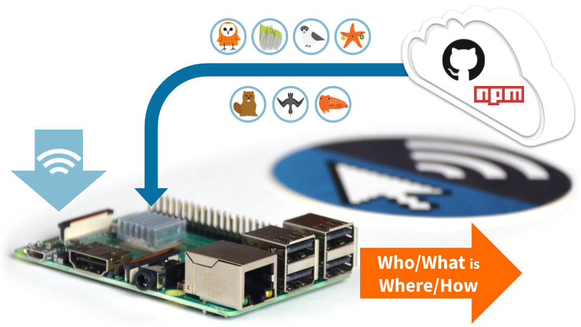

Install our open source software suite on a Pi
Our step-by-step guide to make a Raspberry Pi into an open RTLS, RFID and M2M platform.
The TL;DR (Too Long; Didn't Read)
Learn how we at reelyActive deploy our software suite on a Raspberry Pi.
Our original Pi tutorial is/was one of our most popular pages. This tutorial is a friendlier reference for the software installation.
- What will this accomplish?
- The Pi will accept data from IoT/RFID hardware, providing a comprehensive suite of interactive web applications and APIs.
- Is there an easier way?
- Yes, you can simply flash a ready-made disk image to a SD card.
- Does this apply only to the Pi?
- Most of the process applies equally well to other platforms, especially those running Linux.
Prerequisites
A Raspberry Pi (or equivalent) with Node.js, npm and git installed.
-

Prepare a Raspberry Pi from scratch
Our step-by-step tutorial on how we install Node.js, npm and git on a virgin Pi.
Installing pi-suite Step 1 of 3
Clone our pi-suite repository on GitHub and install all dependencies using npm.
- Do I need to SSH into the Pi?
- Yes. If you forgot how, recall Step 4 from the Pi Prep tutorial.
- What's pi-suite?
- It's a convenience wrapper around our hlc-server package, facilitating deployment on the Pi.
Prerequisites
Both the Pi and the computer used for its configuration must be on the same network, with which they can access the Internet.
Boot the Pi and connect via SSH Part 1
With the prepared micro SD card inserted into the Pi, complete the following:
- Apply power to the Raspberry Pi
- Open a terminal on the computer and SSH into the Pi with the command
ssh pi@xxx.xxx.xxx.xxxreplacing the x values with the Pi's IP address - When prompted enter the password (berryinsecure is the default)
If you're still using the default password, this is as good a time as any to change it. Simply run sudo raspi-config
Install pi-suite and its dependencies Part 2
First create a reelyActive folder under the home folder.
- Change to the home folder with the command
cd - Create (if it does not already exist) a reelyActive folder with the command
mkdir reelyActive - Change to the reelyActive folder with the command
cd reelyActive
Next, install the pi-suite software under this folder.
- Clone the pi-suite repository from our GitHub with the command
git clone https://github.com/reelyactive/pi-suite.git - Change to the pi-suite folder with the command
cd pi-suite - Install all package dependencies from npm with the command
npm install1 min
It is possible that some dependencies produce warnings or errors. Do not despair: in most cases these have no impact on functionality.
Run and validate the pi-suite installation Step 2 of 3
Confirm that everything works.
- Do I need a data source?
- No. The software runs even in the absence of source data.
- Can I test my data source?
- Yes. In the second part of this step you'll find how to quickly validate the integration with common hardware/modules.
From the same terminal connected to the Pi via SSH, and from the pi-suite folder:
Run and validate the vanilla pi-suite Part 1
Start the software and browse to the Pi to confirm that it is running as follows:
- Run the software with the command
npm start - From the computer , point a web browser at the Pi on port 3001, xxx.xxx.xxx.xxx:3001 replacing the x values with the Pi's IP address, as before
Observe the hlc-server landing page. It is normal not to observe any real-time data as a source has yet to be connected.
The software can be stopped by entering Ctrl+C from the command line.
Run and validate a specific configuration (OPTIONAL) Part 2
Should a source of data be available (see the tabs below), it is possible to validate its integration with the software suite.
No additional steps are required!
The software listens for raddecs on UDP port 50001. Data should appear in the web interface.
No additional steps are required!
The software listens for reel packets on UDP port 50000. Data should appear in the web interface.
Instead run the command: npm run start-reel
The software will additionally listen for serial data on /dev/serial0 (GPIO header pins). Data should appear in the web interface.
Running as a systemd service Step 3 of 3
Configure the software to run as a service each time the Pi boots.
- Why systemd?
- It is becoming the de facto standard for system and service management among Linux distributions.
- Is this specific to the Pi?
- Many Linux distributions have adopted systemd, to which these instructions should apply equally well.
From the same terminal connected to the Pi via SSH, and from the pi-suite folder:
Enable the pi-suite service Part 1
Configure systemd to run the pi-suite service by completing the following:
- Copy the unit file to the systemd system folder with the command
sudo cp units/pi-suite.service /lib/systemd/system - Enable the pi-suite service with the command
sudo systemctl enable pi-suite.service - From the computer , browse again to xxx.xxx.xxx.xxx:3001 replacing the x values with the Pi's IP address
Observe the hlc-server landing page.
Confirm that pi-suite runs on boot Part 2
Reboot and again observe the hlc-server landing page as follows:
- Reboot the Pi with the command
sudo reboot now1 min - From the computer , browse again to xxx.xxx.xxx.xxx:3001 replacing the x values with the Pi's IP address
Once again observe the hlc-server landing page. The software suite will indeed run each time the Pi boots.
If necessary, it is possible to disable the service with the command sudo systemctl disable pi-suite.service.
Do you like this document template?
It's based on Bootstrap 4 MIT and Font Awesome 5 (Free) MIT. Our Web Style Guide MIT has all the details. Sharing and feedback are encouraged!
reelyActive's Web Style GuideWhere to next?
Continue exploring our open architecture and all its applications.
-

diyActive Home
The home for reelyActive developers. -
Make a Pi Hub
Our original Pi tutorial.